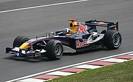
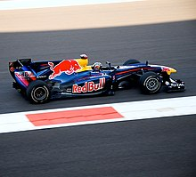
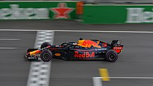
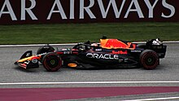

Alla prima stagione, come pilota viene ingaggiato il veterano ed esperto David Coulthard affiancato dai giovani Christian Klien, pilota Jaguar nel 2004, e Vitantonio Liuzzi, già campione di Formula 3000 con la scuderia Arden International diretta da Christian Horner. Questi ultimi avrebbero dovuto dividersi le gare della stagione, con Klien che partecipa alle prime corse e Liuzzi che esordisce nel Gran Premio di San Marino per poi restituire il volante a Klien, ma complessivamente Klien prende parte a 14 gare contro le sole 4 di Liuzzi. Nel 2005 la Red Bull ottiene buoni risultati, chiudendo al 7 posto nei costruttori, e andando a punti con regolarità grazie in particolare a Coulthard, a cui viene rinnovato il contratto per il 2006, così come a Klien, preferito a Liuzzi, che viene dirottato al team satellite Toro Rosso. Durante la stagione la squadra prova come collaudatore anche il pilota statunitense Scott Speed, che ottiene pure il volante della squadra cugina per la stagione successiva.
Nell'ottobre 2006 la scuderia annuncia la sostituzione del propulsore, che passa dal motore Ferrari a quello Renault mentre viene ingaggiato il pilota australiano Mark Webber, che affianca Coulthard. La squadra nel 2007 migliora le prestazioni e ottiene spesso piazzamenti a punti, il miglior risultato è quello di Webber, 3 al Nürburgring. Da tale scuderia viene il nuovo acquisto per il 2009, Sebastian Vettel , che sostituisce Coulthard, ritiratosi dalla Formula 1 al termine della stagione. Mark Webber al Gran Premio di Germania 2009, dove ottiene la prima pole position e la prima vittoria della sua carriera. Proprio il giovane pilota tedesco, il 19 aprile, vince il Gran Premio di Cina con alle spalle il compagno Mark Webber a siglare la doppietta, registrando quindi il primo importante successo per il team che, assieme alla Brawn GP, diventa protagonista del campionato dopo un avvio difficile. Il giorno prima Vettel aveva anche conquistato la prima pole position per la scuderia, pole poi ottenuta anche nel Gran Premio di Turchia il 6 giugno e nel Gran Premio di Gran Bretagna, a Silverstone, il 21 giugno. Due settimane dopo, al Nürburgring, la squadra ottiene un'altra doppietta, ma a vincere stavolta è Webber, partito in pole e autore di una gara impeccabile nonostante il drive-through subito per aver toccato la Brawn GP di Rubens Barrichello al via. In seguito la squadra consolida il secondo posto tra i costruttori, e a ottobre centra altre 2 vittorie, con Vettel in Giappone e con Webber in Brasile. La stagione 2009 si conclude nel migliore dei modi, con la quarta doppietta stagionale ottenuta ad Abu Dhabi, dove Vettel taglia il traguardo davanti al compagno di squadra Webber e conquista il secondo posto nel campionato piloti.
Sebastian Vettel vince il Gran Premio di Abu Dhabi 2010, partendo dalla pole, e si aggiudica il primo dei quattro titoli mondiali consecutivi. La stagione comincia molto bene con 7 pole nelle prime 7 gare, 3 di Vettel e 4 di Webber. Ciononostante, la Red Bull a Monaco, dopo la vittoria di Webber, vede i suoi piloti in testa a tutti. In estate e nella prima parte dell'autunno Webber si dimostra più costante, vincendo due gran premi e andando in testa al mondiale in Ungheria fino a Suzuka. Vettel invece a belle prove come la vittoria in Giappone alterna errori grossolani come quello di Spa-Francorchamps, quando tampona Jenson Button durante una manovra di sorpasso. Webber mentre è secondo si scompone, sbatte contro un muretto e quindi viene investito da Nico Rosberg, venendo così costretto al ritiro. Vettel invece corre da gran campione ma a 10 giri dalla fine rompe il motore. La situazione a due gare dalla fine appare disperata, con Webber a -11 e Vettel a -25 dal leader Alonso. In Brasile la Red Bull vince il suo primo mondiale costruttori con una doppietta, ma primo arriva Vettel. Alonso comanda con +8 su Webber e +15 su Vettel. Nell'ultima gara Vettel parte in pole, Webber è 5, Alonso 3. In gara la Ferrari si concentra a marcare Webber, dimenticandosi di Vettel. Così, quest'ultimo vince gara e mondiale poiché Alonso è solo 7 e Webber 8. L'australiano arriva 3 in classifica generale e Alonso perde il mondiale con solo 4 punti di distacco da Vettel. Per il campionato 2011 la Red Bull utilizza una nuova vettura, chiamata RB7, guidata per la terza stagione consecutiva da Vettel e da Webber. Alla fine del Gran Premio del Giappone, vinto da Jenson Button, Sebastian Vettel si conferma campione del mondo, con 4 gare ancora da disputare. Per il campionato 2012 la Red Bull Racing utilizza la nuova vettura RB8, guidata ancora da Sebastian Vettel e da Mark Webber. In quelle gare la Red Bull racimola 42 punti, 24 con Webber e 18 con Vettel. A Monaco è invece Webber che segna la vittoria. A Silverstone Webber ottiene la 2 vittoria stagionale, davanti ad Alonso e al compagno di squadra Vettel. Al Gran Premio di Germania Vettel è sostenuto da numerosi tifosi, e vuole interrompere la tradizione negativa che non lo ha mai visto vincere in Germania nel mese di luglio. Viene classificato così quinto, con Webber ottavo. Il finale di stagione è tutto in discesa per la scuderia di Milton Keynes che con Vettel riesce a vincere quattro gran premi di fila, rispettivamente a Singapore, in Giappone, Corea ed India. Questi risultati, uniti ad altri quattro podi, due secondi e due terzi posti, permettono alla Red Bull Racing di aggiudicarsi il titolo costruttori e piloti per il terzo anno consecutivo, quest'ultimo meritatamente, nonostante qualche incidente e inconveniente nell'ultimo Gran Premio del Brasile, con Sebastian Vettel che dopo un testa-coda nelle fasi iniziali rimonta dall'ultimo al 6 posto, vedendo ridursi il suo iniziale vantaggio di 13 punti a soli 3 punti sul ferrarista Fernando Alonso, giunto 2 al traguardo, beffato di nuovo come nel 2010 per una manciata di punti. Vettel vince il Gran Premio del Belgio 2013, il primo di 9 successi consecutivi per il tedesco. Al Gran Premio inaugurale in Australia la Red Bull chiude con Vettel al terzo posto e Webber al sesto posto. In Cina la Red Bull RB9 non sembra adattarsi bene alle caratteristiche del tracciato e così in qualifica Vettel decide di risparmiare un set di gomme soft da utilizzare poi in gara, rinunciando a puntare alla pole e prendendo il via dalla nona posizione. Webber viene invece rallentato da un problema alla benzina ed è costretto a terminare le prove addirittura in Q2. Lo sfortunato Webber perde addirittura uno pneumatico che era stato mal fissato in precedenza. Una settimana dopo si corre il Gran Premio del Bahrein e Sebastian Vettel prende il via in prima fila dietro la Mercedes F1 W04 di Nico Rosberg, Webber scatta invece dall'ottava posizione dopo una retrocessione. Al terzo giro Vettel passa con facilità il suo connazionale già in difficoltà con il consumo delle gomme e si invola verso la vittoria e la leadership del campionato. Webber chiuderà invece solamente in settima posizione. Nel prosieguo della stagione, la Red Bull comincerà il suo monologo fino a fine stagione, arrivando a toccare 9 vittorie consecutive sempre con Sebastian Vettel. Alla concorrenza rimarranno le briciole e quando si arriva in Brasile finisce così il Mondiale con la vittoria ufficiale nella classifica costruttori della Red Bull, che conclude la stagione con Vettel, già iridato per la quarta volta nel Gran Premio d'India, seguito da Mark Webber.
La stagione non inizia per il verso giusto, nel Gran Premio d'Australia Vettel è costretto al ritiro, mentre Daniel Ricciardo, arrivato secondo al traguardo, viene squalificato a causa di un'irregolarità nella sua vettura. In Malesia Vettel arriva terzo mentre Ricciardo si ritira. Nel Gran Premio del Canada Ricciardo taglia il traguardo per primo e Vettel arriva terzo. Nel Gran Premio d'Ungheria e Gran Premio del Belgio Daniel Ricciardo taglia il traguardo in prima posizione, conquistando così la seconda e la terza vittoria stagionale. Nel Gran Premio di Singapore arriva la seconda doppietta a podio della stagione, con Vettel secondo e Ricciardo terzo. Alla vigilia del Gran Premio del Giappone è arrivata l'ufficialità dell'addio all'Infiniti Red Bull di Sebastian Vettel a fine campionato e il suo approdo alla Ferrari, con il conseguente annuncio di Daniil Kvjat della Toro Rosso come compagno di Ricciardo per la stagione 2015 . Sempre in Giappone arriva il terzo posto di Vettel e ad Austin arriva l'ottavo podio di Ricciardo in stagione e carriera, terzo al traguardo. Nelle prime gare del campionato 2015 la Red Bull, pur arrivando sempre a punti, non ha la competitività necessaria per lottare nelle prime posizioni, tranne a Monaco, dove Kvjat arriva quarto e Ricciardo quinto. Dopo gare deludenti, in Ungheria Daniil Kvjat è secondo con Ricciardo terzo nella miglior gara della stagione. Ricciardo torna a podio a Singapore dopo essere partito dalla prima fila accanto a Vettel. Nel Gran Premio degli Stati Uniti, Ricciardo e Kvjat, partiti terzi e quarti, si ritrovano a battagliare con le due Mercedes nella prima parte di gara, ma alla fine l'australiano chiuderà decimo, mentre il russo si ritirerà. La stagione, la peggiore delle ultime sette, si concluderà ad Abu Dhabi con il sesto posto di Ricciardo e il decimo di Kvjat, e vedrà la scuderia scivolare al quarto posto nei costruttori. La nuova monoposto è presentata ai test collettivi di Montmeló, dove Ricciardo dice di essere messo meglio rispetto a 12 mesi prima. Nel Gran Premio d'Australia, Ricciardo chiude quarto, mentre Kvjat si ritira. In Bahrein Ricciardo bissa il risultato dell'Australia, con Kvjat settimo. Ricciardo, partito dalla prima fila, chiude subito dietro al russo. In Russia Ricciardo chiude undicesimo e Kvjat, nella sua gara di casa, addirittura quindicesimo. La gara sarà vinta da Lewis Hamilton davanti a Daniel Ricciardo, quest'ultimo partito in pole, e Sergio Pérez autore di una grande rimonta. In Canada Verstappen arriva quarto, protagonista di una grande difesa su Nico Rosberg negli ultimissimi giri, mentre Ricciardo è settimo. In Azerbaigian sul nuovissimo tracciato del Gran Premio d'Europa altro settimo posto per Ricciardo, mentre Verstappen conclude ottavo. Nei successivi quattro gran premi arrivano cinque piazzamenti sul podio, due per Ricciardo , e tre per Verstappen, con i secondi posti in Austria e Gran Bretagna e il terzo posto in Germania. Nel Gran Premio del Belgio altro podio per Ricciardo, secondo alle spalle di Rosberg, mentre Verstappen partito secondo non va oltre l'undicesimo posto, complice anche un contatto al via con le due Ferrari. Nel Gran Premio d'Italia i due alfieri Red Bull disputano una prova non brillantissima, con Ricciardo quinto e Verstappen settimo, che permette un riavvicinamento della Ferrari nei costruttori. Ma il pronto riscatto si ha nel Gran Premio di Singapore, con un altro podio per Ricciardo, giunto secondo insidiando Rosberg nel finale per la vittoria, e Verstappen sesto. Nulla in confronto alla clamorosa doppietta ottenuta nel Gran Premio della Malesia, approfittando del ritiro di Hamilton, con Ricciardo che precede Verstappen. Piccolo passo indietro invece nel Gran Premio del Giappone di una settimana dopo, con Verstappen che si conferma secondo, ma con Ricciardo che giunge solo sesto. Nel Gran Premio degli Stati Uniti Ricciardo torna sul podio, giungendo terzo, mentre Verstappen è costretto al ritiro per un problema alla power unit. Non altrettanto brillante Ricciardo, che non va oltre l'ottavo posto. La stagione si chiude col quarto posto di Verstappen , e il quinto posto di Ricciardo nel Gran Premio di Abu Dhabi, con la scuderia che ottiene così il secondo posto finale nei costruttori con 468 punti, portando a casa 2 vittorie, 1 doppietta e 1 pole position. La prima guida Daniel Ricciardo sembra invece più costante, con diversi podi ottenuti che culminano nella vittoria del Gran Premio d'Azerbaigian. Daniel Ricciardo, qui impegnato nelle prove libere, si aggiudica il Gran Premio di Cina 2018. Nel 2018 il team si iscrive dunque come Aston Martin Red Bull Racing, e la stagione si apre con un quarto posto di Daniel Ricciardo in Australia, mentre Verstappen termina solo sesto. Due settimane dopo, in Bahrein, entrambi i piloti son costretti al ritiro, Ricciardo per problemi tecnici, Max per una foratura. La Cina sorride alla scuderia anglo-austriaca, con Ricciardo che riporta la Red Bull a vincere dopo il Gran Premio del Messico 2017. In gara nonostante alcuni problemi tecnici sulla vettura di Ricciardo, l'australiano ottiene la sua settima vittoria in Formula 1.  Nel Gran Premio degli Stati Uniti Ricciardo si ritira, mentre Verstappen giunge ancora a podio chiudendo al secondo posto. Buona prestazione anche nel successivo Gran Premio del Brasile, con il decimo podio stagionale di Verstappen che giunge secondo e il quarto posto di Ricciardo. Nell'ultima gara stagionale ad Abu Dhabi Verstappen si conferma sul podio, giungendo terzo, mentre Ricciardo si congeda dal team austriaco chiudendo al quarto posto.
Il motorista giapponese rimane al fianco del team in qualità di collaboratore tecnico, e dal 2023 compare anche nella denominazione dei motori delle due scuderie, venendo ribattezzati Honda RBPT. Sergio Pérez durante il Gran Premio d'Austria 2022. Nel 2022 la line-up dei piloti rimane invariata, con il campione del mondo in carica Verstappen che porta il numero 1 sulla sua vettura, affiancato dal confermato Pérez. La società statunitense Oracle Corporation inizia una collaborazione pluriennale con la Red Bull Racing, ricoprendo il ruolo di title sponsor della scuderia, ufficialmente rinominata Oracle Red Bull Racing. Max Verstappen alla guida della sua Red Bull, protagonisti di una stagione 2023 da record. Al rientro dalla pausa estiva, questo record viene ulteriormente migliorato arrivando a un totale di 15 vittorie consecutive , prima che la Ferrari di Carlos Sainz Jr. s'imponga a Singapore interrompendo la striscia, unica gara stagionale non vinta dalla Red Bull. A parte questo episodio infatti, vengono vinte tutte le ultime 7 gare, sempre per opera di Verstappen, confermatosi campione del mondo piloti per la terza volta consecutiva dopo la Sprint del Gran Premio del Qatar , stabilendo il nuovo record di vittorie a fine anno e di punti . La scuderia austriaca inoltre, nel precedente Gran Premio del Giappone, si aggiudica il secondo titolo costruttori consecutivo, il sesto della sua storia. Il bottino finale di questa stagione di dominio assoluto è di 21 vittorie, 6 doppiette e 14 pole position su 22 gare, per un totale di 860 punti, anche in questo caso nuovo primato per la categoria.
